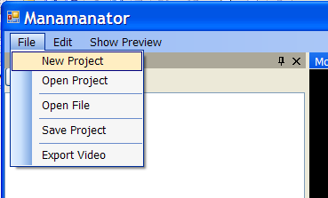
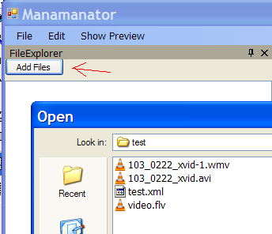
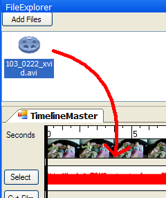
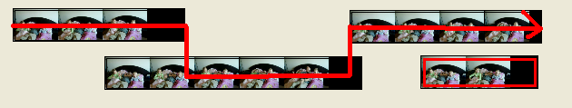

Getting Started:
The
program is mostly just a framework at this point., but it still can be
used to edit movies. The cut, copy, move and encode functions
work well. If you wish to import more movie formats (mov, flv...)
You should download and install
ffdshow
The
name is a little odd: It referes to Mana Mana from the muppets. I
originally built this video editor to help me play with my daughters
who wanted to make
their own Mana Mana video. The name is
the Mana Mana Editor -> Manamanator. I will probably
change the name sometime, but not today.
To edit a movie:
1. Create a new project.

Enter
all the needed data into the next page. Most of the data will be
automatically sensed, but your desired framerate and framesize are
important to the editing process.
2. Import Media files:

Load
all the media files that you desire into the project. It is wise
to save your project at this point. The program can handle any
media format that has a registered codec on the system, or that ffdshow
supports, if you are using ffdshow.
3. Drag Files to timeline editor:

Drag
the desired file from the project file explorer to timeline editor.
Here you can cut, copy, move and arrange the media as desired.
When you have everything set up as desired press play on the
viewer to begin.
You should remember that the manamanator always selects the clip that is highest in the timeline editor to pull frames. 
This image shows the way that the clips will be played. A similar path will be followed for the audio effects.
4. Export finished video:
When
the video plays like you wish in the viewer, you can export the
finished video. This is done by clicking File and then Export
Video. Select the output folder and filename, select the
output format and click export.